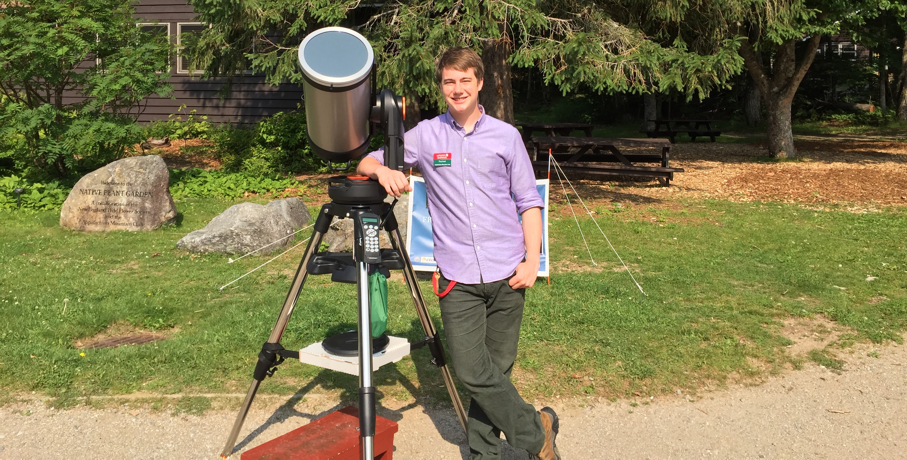

Research Assistant
Research AssistantRaphael Erik Hviding
The Skyentist
As a child, my favorite VHS was a 1997 Eyewitness Documentary about the planets. Ever since then I couldn't stop wondering what lay beyond earth. The universe intrigued me and I wanted to continue learning about it. I therefore studied physics and mathematics throughout middle and high school, which gave my immediate family and friends the idea that I would excel at, or at the very least be interested in, engineering. So, in the summer of 2013, I took an engineering course, and I realised that it was the allure of discovery and experimentation that drove me to the sciences in the first place. So after arriving at Dartmouth, I got involved with research in the astronomy department. I am now a graduate student at the University of Arizona and thus far the study of astronomy, just as in my childhood, has kept me spellbound as I marvel over the beauty of the universe.
I was born in France to an Argentine-American mother and Norwegian father, but I grew up and went to grade school in Washington D.C. I try to stay connected to both sides of my family, despite them being on opposite sides of an ocean and the equator, leading me to consume copious amounts of airline pretzels. As a person I generally try to keep a positive attitude, however that does come with the added clause of consistently making bad puns, to the general dissatisfaction of my friends. I fence épée with the University of Arizona Wildcat Fencing Team (Wildcat Fencing) and love to hike and bike in the Tucson area. In my spare time I follow educational channels and gaming channels on youtube, along with a hugely varied number of television shows, ranging from Voltron: Legendary Defender to Westworld. I also play some video games, mainly through Steam, that tend to be short, story driven, indie titles. However, I will never turn down a good game of Super Smash Bros. Ultimate.